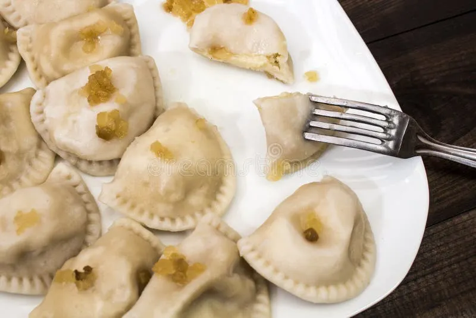

Pierogi
Home

Description
Ingredients
- 2 pounds russet potatoes, scrubbed
- 1 tablespoon kosher salt
- 1 tablespoon unsalted butter
- 2 tablespoons minced onion
- 8 ounces farmer cheese, or dry curd, or ricotta, at room temperature
- 2 to 2 1/2 cups all-purpose flour
- 1 large egg, at room temperature
- 1 teaspoon kosher salt
- 1 to 1 1/2 cups lukewarm water
- 2 to 3 tablespoons unsalted butter
Steps
- Parboil 2 pounds russet potatoes (scrubbed) in a large saucepan by covering them with cold water and adding 1 tablespoon of salt.
- Bring the potatoes to a boil over high heat, then reduce to medium-low, cover with a lid, and simmer for 30 minutes, or until fork-tender. Drain and let cool slightly.
- While the potatoes are parboiling, place 1 tablespoon unsalted butter in a small pan, add 2 tablespoons minced onion, and sauté over medium-low heat for 2 minutes. Remove from heat and set aside.
- Peel the cooked potatoes, place them in a large bowl, and mash them with a fork or potato ricer.
- Add the sautéed onion and 8 ounces farmer cheese, dry curd, or ricotta to the potatoes and mix well. Season to taste with kosher salt and freshly ground black pepper and set aside.
- Place 2 cups of all-purpose flour in a large bowl or on a work surface and make a well in the center.
- Break 1 large egg into it, then add 1 teaspoon of salt and 1 cup of lukewarm water, a little at a time.
- Bring the dough together, kneading well and adding the remaining flour or water as needed to form a smooth dough ball.
- Divide the dough in half and cover it with a bowl or towel. Let it rest 20 minutes.
- Assemble the pierogi on a floured work surface by rolling out the dough to 1/8 inch in thickness. Using a 2-inch round cookie cutter or drinking glass, make small circles.
- Spoon 1 1/2 teaspoons of the filling onto the middle of each circle.
- Fold the dough in half to form a half-circle shape and then firmly pinch the edges together.
- Sprinkle a baking sheet with flour and place the filled pierogi on it in a single layer. Keep the formed pierogi under a clean kitchen towel to stop them from drying.
- Gather scraps, reroll, and fill until you've used all of the first half of the dough. Repeat the process with the remaining half of dough.
- Cook the pierogi by bringing a large, low saucepan of salted water to a rapid boil. Depending on the size of your pot, drop in about 6 to 10 pierogi at a time, making sure not to overcrowd the pot. Return the water to a boil and reduce the heat to a simmer. When the pierogi rise to the surface, continue to simmer a few more minutes. It should take around 5 to 6 minutes for the pierogi to be cooked.
- With a slotted spoon taste one, and if done, remove the remaining pierogi to a platter greased with some of the butter for serving. This will prevent the pierogi from sticking to each other.
- Serve warm with caramelized onions, skwarki, or crispy bits of bacon and a dollop of sour cream. Enjoy.